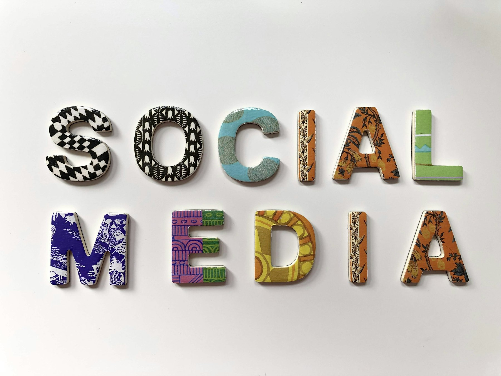
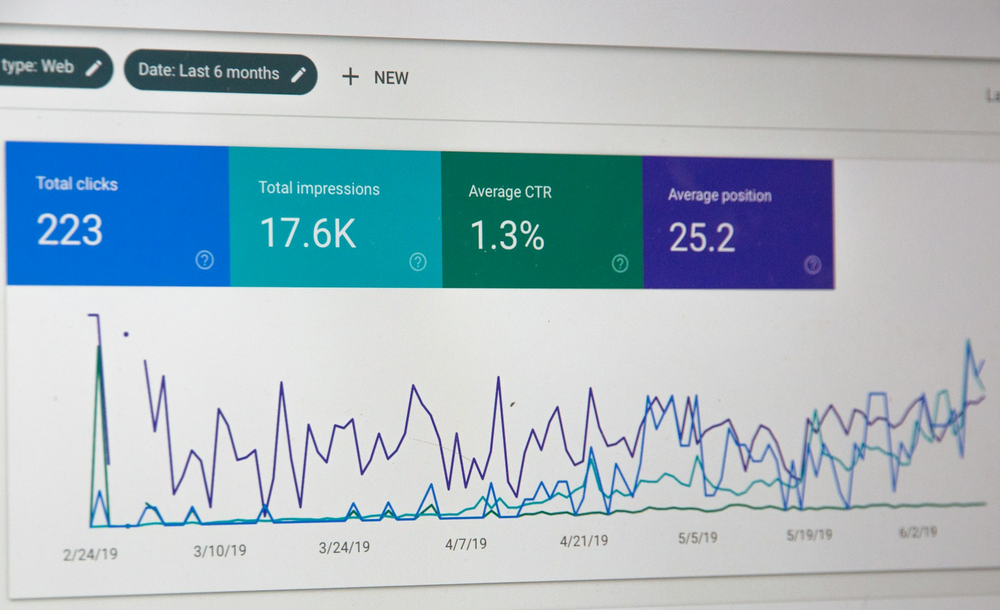

TL;DR
For effective blog writing, focus on quality and consistency.
Use the right writing and SEO tools, analyze your performance, and monetize through affiliate marketing to maximize your income as a creator.
Understanding the Importance of Quality Content
Creating quality content is vital for any blog.
It not only attracts readers but also encourages them to return.
Budding creators should focus on topics relevant to their audience and provide value through detailed research and original insights.
Readers will often engage with high-quality, well-structured posts, making it essential to prioritize quality over quantity.
Quality content encourages sharing on social media and boosts SEO rankings, both crucial for driving organic traffic.
This exposure can ultimately lead to higher ad revenues and affiliate conversions.
Choosing the Right Writing Tools
Select writing tools that suit your workflow.
Options like Google Docs or Microsoft Word provide collaborative features and rich formatting options.
For seamless editing, Grammarly can enhance your writing quality by suggesting improvements in real-time.
For team collaborations, research tools like Evernote allow you to capture ideas and organize them efficiently.
Choose tools that integrate smoothly into your existing processes.
Making sure these tools are user-friendly will help you stay focused on creating rather than troubleshooting.
Utilizing SEO Tools for Enhanced Visibility
To increase your blog's visibility, leverage SEO tools like SEMrush or Ahrefs.
These tools help identify the best keywords to target, analyze competitors, and track performance metrics.
Incorporate tools for on-page SEO, such as Yoast SEO for WordPress, which guides you in optimizing each post.
Pay special attention to title tags, meta descriptions, and alt text for images.
Ensuring that your content ranks well on search engines can lead to increased traffic and potential subscriber growth.
Scheduling Content for Consistency
Establish a content schedule to maintain consistency in your posting.
Tools like Trello or Asana can help you plan topics, track deadlines, and brainstorm ideas.
Use an editorial calendar to visualize your content strategy over weeks or months.
Regularly publishing new posts keeps your audience engaged and improves your site's SEO performance.
Consistency is key in building trust and retaining readers, which translates into robust monetization opportunities.

Promoting Your Blog with Social Media Tools
Use platforms like Buffer or Hootsuite to automate your social media posts.
By scheduling content in advance, you ensure a steady stream of updates across various channels.
Diversifying your promotion efforts maximizes the reach of your blog.
Consider creating shareable graphics with Canva to attract more clicks.
Promoting your posts on suitable platforms helps you attract diverse audiences, which is essential for growing your blog and monetization avenues.

Analyzing Performance to Improve Strategy
Continually analyze your blog's performance using Google Analytics.
Monitor metrics like traffic sources, bounce rates, and conversion rates.
Understanding these elements guides strategic decisions about content creation and marketing efforts.
Adjust your strategies based on insight gained from analytics.
For instance, if certain topics generate more traffic, consider expanding on those areas.
This data-driven approach can enhance your blog's growth and income potential.
Monetizing Through Affiliate Marketing
Consider affiliate marketing as a path to monetize your blog.
Research programs related to your niche and build genuine relationships with brands.
Use your blog to promote these products or services naturally rather than forcing them into your content.
Always provide honest reviews and personalized experiences to maintain trust.
Successful affiliate marketing can lead to substantial earnings and complement your income as a creator, promoting a sustainable blogging business.
FAQ
What are the best tools for writing a blog?
Some essential tools include Google Docs for writing, Grammarly for grammar checks, and Yoast SEO for search optimization.
How can I improve my blog's visibility?
Utilize SEO tools to determine popular keywords, ensure all posts are optimized for search engines, and promote content on social media.
How often should I post on my blog?
Aim for consistency. Ideally, post once a week to keep your audience engaged while allowing time for quality content creation.
What is affiliate marketing?
Affiliate marketing is a way to earn commissions by promoting products or services on your blog and providing unique links to purchase them.
How can I analyze my blog's performance?
Use Google Analytics to track traffic sources, user behavior, and conversion rates to continually refine your blogging strategy.
Photo credits
- Photo 1: Markus Winkler on Unsplash (https://unsplash.com/@markuswinkler) (https://unsplash.com/photos/black-and-white-typewriter-on-green-table-_nvKjg0aliA)
- Photo 2: Kira auf der Heide on Unsplash (https://unsplash.com/@kadh) (https://unsplash.com/photos/white-fountain-pen-on-white-open-book-9P7WD1dU5VQ)
- Photo 3: Stylite yu on Unsplash (https://unsplash.com/@yu1061209927) (https://unsplash.com/photos/pen-on-notebook-QzYycqDetgI)
- Photo 4: Estée Janssens on Unsplash (https://unsplash.com/@esteejanssens) (https://unsplash.com/photos/black-marker-on-notebook-zni0zgb3bkQ)
- Photo 5: Merakist on Unsplash (https://unsplash.com/@merakist) (https://unsplash.com/photos/assorted-color-social-media-signage-CNbRsQj8mHQ)
- Photo 6: Stephen Phillips - Hostreviews.co.uk on Unsplash (https://unsplash.com/@hostreviews) (https://unsplash.com/photos/monitor-screengrab-shr_Xn8S8QU)
- Photo 7: Merakist on Unsplash (https://unsplash.com/@merakist) (https://unsplash.com/photos/multicolored-marketing-freestanding-letter-jyoSxjUE22g)